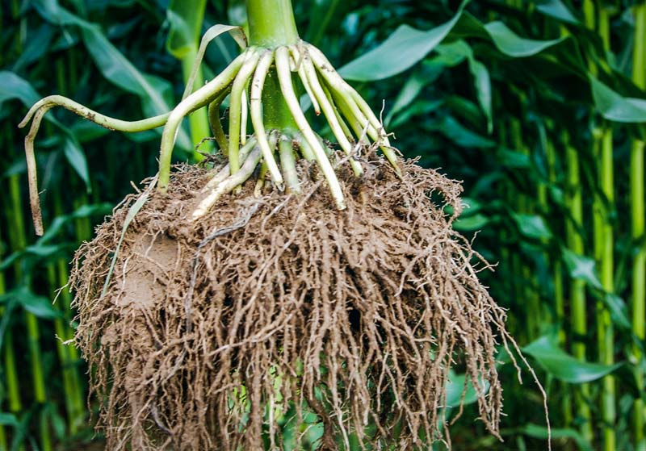

LA RACINE DE MAIS POUR L'AMELIORATION DE LA VISION
NOTRE SANTE AVANT TOUT
lE MAIS: Zea mays L, OU zea mays subst MAYS mais moi je veux vous parler de son efficaciter dans l'amelioration de notre vision .
NOTRE SANTE AVANT TOUT
lE MAIS: Zea mays L, OU zea mays subst MAYS mais moi je veux vous parler de son efficaciter dans l'amelioration de notre vision .
crois tu a la medecine tradionnelle moi je crois ce pourquoi je te demande de faire un pas puis voir les resultats.
11.11.2016
Non seulement pour la nutrition et fabrication des boissons les mais a aussi d'autre pouvoir curatif. c'est ainsi que je vais vous parler de la maniere dont cette plante peut ameliorer votre vision:- AU Moment ou votre mais atteint la maturite;consommez ces cereales pour plein des proteines pour la sante .- ne jettez pas les racines ,car c'est dans les racines,que les mais conservent un pouvoir extraordinaire pour l'amelioration de votre vision - immediatement apres avoir couper les mais, vous pouvez derracinnez 4 a 5 tiges .lavez cela profondement avec de l'eau propre / des que vous constantez que tout est propre, broyer ces racines avec pillon de maniere a permettre que l'eau chaude tire toute la quantite des jus du mais - la quantite de l'eau a melanger dans ces racines c'est 5litre. laissez bouillir les racines des mais j'usqu'a 3litre - le refroidissement ,vous filtrer le jus et melanger avec une quantite de miel. -le role de miel dans le melange ce de conserver le jus de mais pour ne pas ce detruire mais aussi enrichir le povoir des guerrisons des racines...
Apres refroidissement vous filtrer le jus .melanger le 3 litre du jus avec un demi litre de miel , consommez 3 tasses a cafe par jourb; chaque matin, midi et soir faites cette meme operation 3 fois et votre vision va changer...